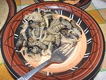

|
Mopane Worm StewSouthern Africa - (See Names) | ||||
| Serves: Effort: Sched: DoAhead: |
5 app *** 1 hr Yes |
Nutritious Mopane Worms (actually large caterpillars) are a very popular snack or appetizer in much of Sourthern Africa served in various ways. | |||
|
14 12 1/3 7 2 4 1 1/2 1-1/2 ------- ar |
oz oz in oz cl t t t T --- |
Mopane, dried (1) Tomatoes Ginger root Onion Garlic Curry Powder (2) Salt Pepper Oil -- Serve with Nshima (3) |
I have not been able to test this recipe yet, as Mopanes are "out of stock" in North America. The photo doesn't represent the recipe as it's a simpler version without tomatoes, but it's the only decent photo available. This recipe is fairly typical of Zimbabwe, but very similar recipes are found in the rest of Southern Africa, and even into D.R. Congo and Angola. DoAhead - (1 to 3 hours)
|